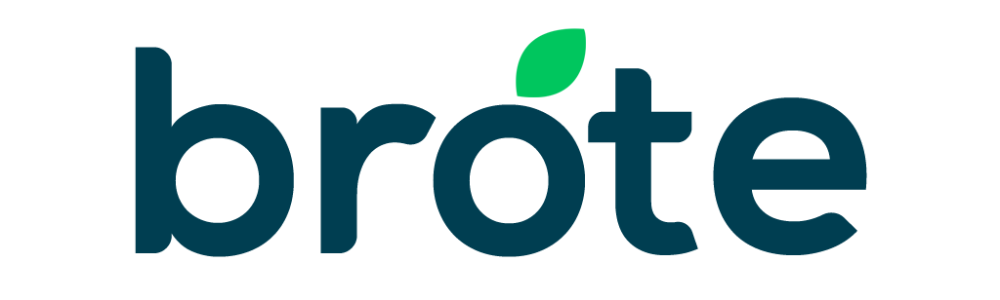
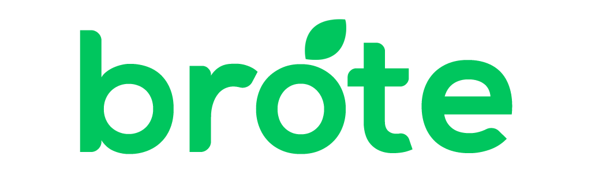
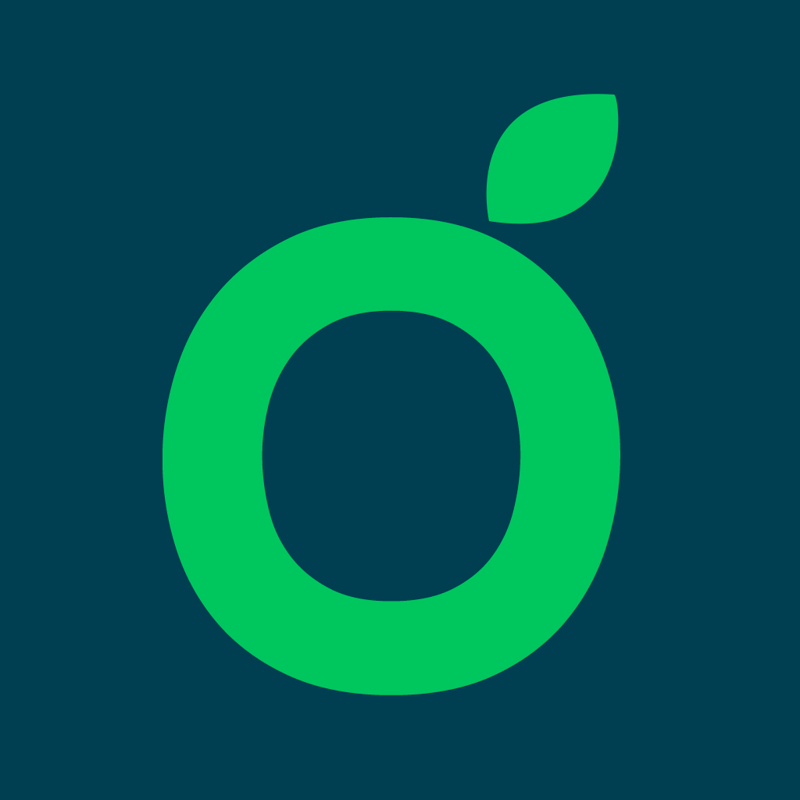

Impulsando el campo mexicano.
Quiénes somos
Ayudamos a las empresas que venden al campo a ejecutar su estrategia comercial con datos, marketing digital y conocimiento real del productor.
| Promesa | Hacemos que tu estrategia se ejecute en el campo, y te mostramos con datos que funcionó. |
| Pilares | Del campo · Ejecución · Datos con sentido · Relaciones de largo plazo |
| Personalidad | Práctica, cercana, segura, moderna y mexicana. |
| Trato | Tú con empresas; usted con productores. |
Logotipo



Color
El verde brote no se usa como texto sobre blanco (2.3:1). Para eso existe brote texto (5.5:1).
Tipografía · Urbanist
Tu estrategia, ejecutada en la parcela
Urbanist 400 a 700 para titulares, texto y botones. Titulares en tipo oración; una sola palabra en verde por titular.
Citas · Lora itálica
“Agrónomos, analistas y creativos que hablan el idioma del campo y saben convertir un plan en ventas.”
Servicios e íconos
Fotografía
Documental y real: productores, técnicos y equipos trabajando en campo mexicano, con luz natural. Personas haciendo su trabajo, sin posar. Siempre con overlay de petróleo antes de poner texto.
Mensajes clave
| Firma | Impulsando el campo mexicano. |
| Campaña | Publicidad y marketing para el campo. |
| Método | Con BrtX™, tu estrategia llega a la parcela. |
| Llamado | Cuéntanos qué quieres que crezca. |